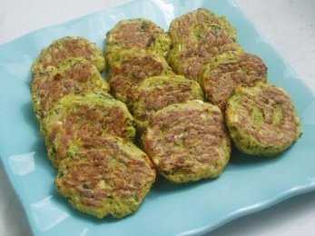

Bouchées courgettes feta
Ingrédients
4×
- 1 courgette
- 1 oignon
- 0.5 bouquet de basilic
- 60 g de feta
- 50 g de chapelure
- 2 œufs
- sel
- poivre

Préparation
Étape 1
Râper 1 courgette sans la peler. Émincer très finement 1 oignon. Ciseler 0.5 bouquet de basilic et émietter 60 g de feta.
Étape 2
Mélanger avec 50 g de chapelure, 2 œufs, sel et poivre.
Étape 3
Façonner 12 boulettes et les aplatir légèrement sur une plaque recouverte de papier sulfurisé légèrement beurré.
Étape 4
Cuire à 220ºC 7 à 8min de chaque côté, en les retournant à mi-cuisson.
Résumé
1 courgette
1 oignon
0.5 bouquet de basilic
60 g de feta
Râper Émincer
50 g de chapelure
2 œufs
sel
poivre
Mélanger
Façonner 12 boulettes
Cuire 220ºC